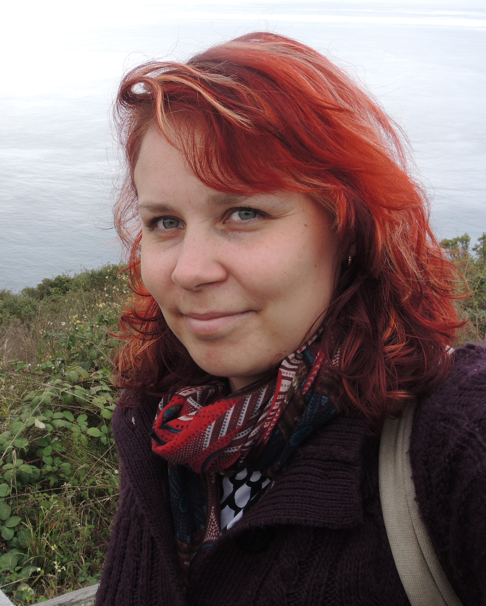

My main research interest is understanding how different plant cell types have evolved, and how these cell types develop and respond to environmental changes.
NEWS:
I am is starting as an Assistant Professor in the Plant Ecophysiology group at Utrecht University in July 2017!
I am looking for postdoctoral researchers and graduate students to join my team. Please get in touch if you are interested in writing a fellowship proposal to work with me.